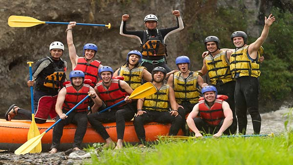
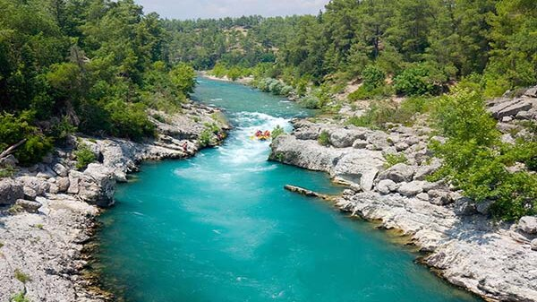

See what others are enjoying
The users from our website want to give you a glimpse of what you can have by being part of our comunity.
Take a look of what they have being doing and see if you can relate to them.



My friends and I finally were able to find a place that takes care of everything so we can do sport that we love and celebrate in the end instead of complain about the things that were supposed to be different. Jason Smith
My children loved it so much! It's not so easy to find an adventure that we can have th whole family doing it together, but guess what? We found it in here! Kate Shaun
I am always looking for amazing spots to take nice pictures during outdoors activities. This web site helped me a lot taking me to places I could never imagine existed. Brian Queen